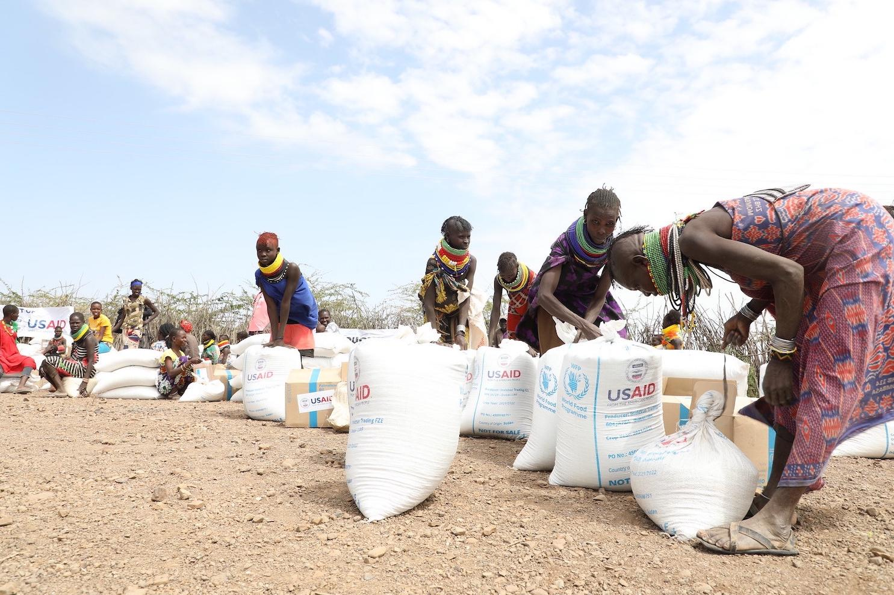
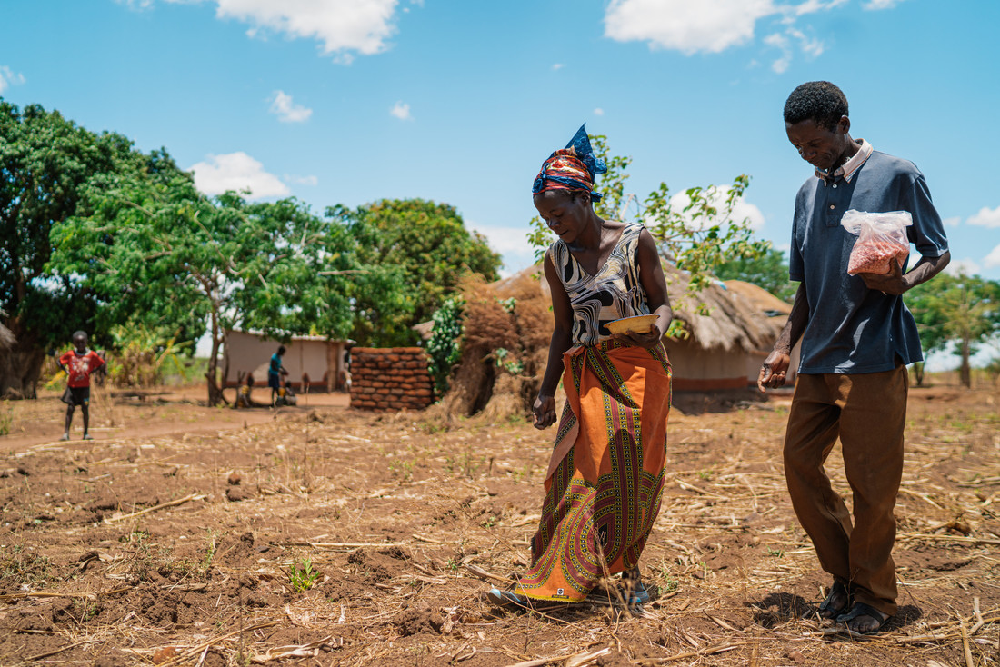
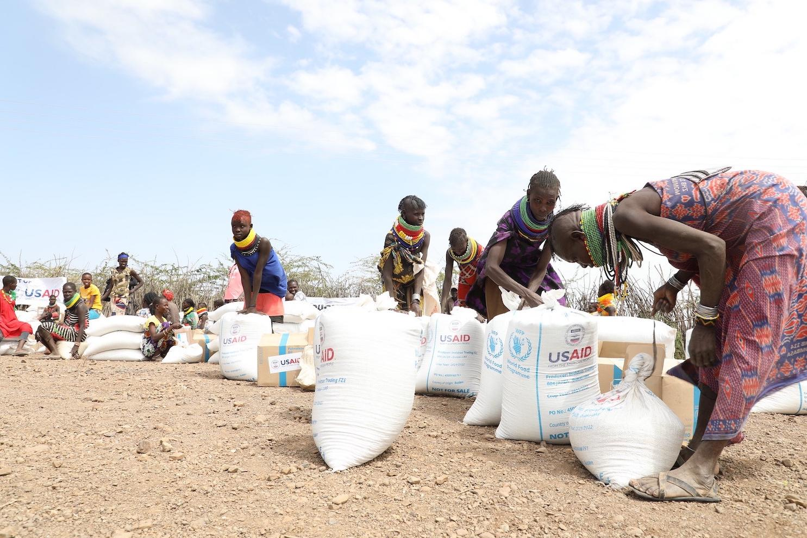
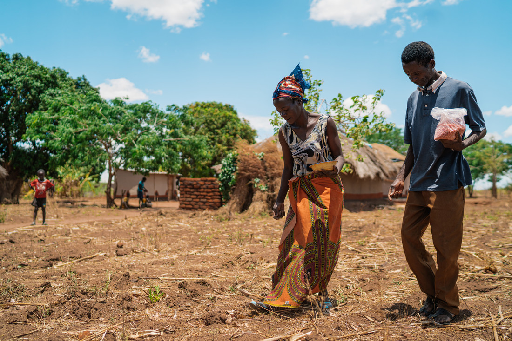

World Hunger is caused by many factors such as economic, political, environmental, and social causes.
But it is mainly or mostly caused by poverty, especially since there are people who lack resources
to buy or grow enough food. Lack of resources to be able to grow food leads to food shortages, which
means that there would be nothing for farmers to grow and we would have nothing to consume.
Climate change also plays a role in this, mostly because if the weather is extreme or is not the right
weather for growing resources such as crops it would result in the decrease of agricultural output.
While political instability and poor governance can increase or worsen problems about world hunger.
An unstable economic system, including the rise of food prices, makes it harder for certain people
to afford their basic necessities.
When we experience such problems it can affect us in various ways such as developing health problems
and our education. This is why being aware of what causes World Hunger is crucial to avoid
experiencing it as much as possible.
 


